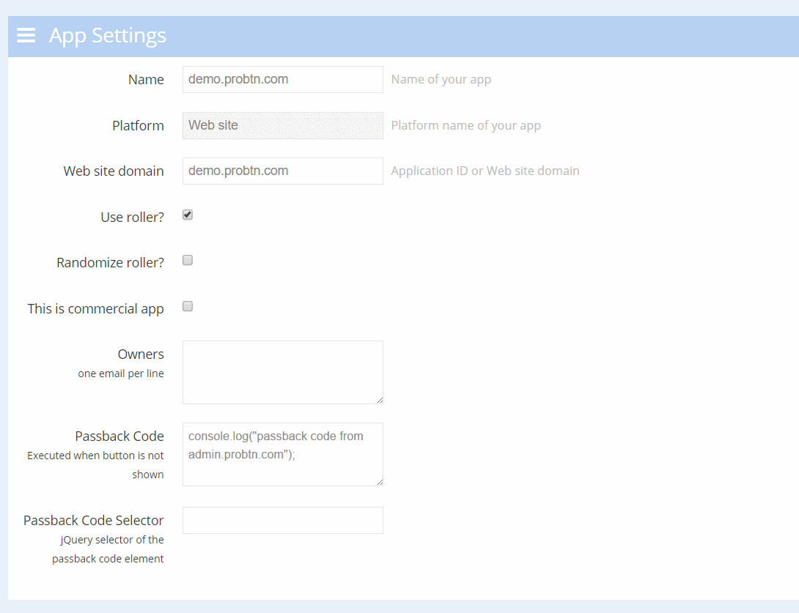

Иерархия сущностей admin.probtn.com¶
Иерархия¶
Будет или не будет показываться данный креатив определяется только его собственным состоянием (ON/OFF) При выключении какого-либо элемента выше по иерархии, состояния дочерних элементов запоминаются и они все выключаются. При включении обратно те дочерние элементы, которые изначально были включены, снова включаются, состояния остальных не меняются
Примеры¶
Пример 1¶
Группа креативов - ON
- Креатив-1 - ON
- Креатив-2 - OFF
Какие креативы показываются? Креатив-1
Теперь выключаем группу, состояния становятся:
- Группа креативов - OFF
- Креатив-1 - OFF
- Креатив-2 - OFF
Какие креативы показываются? Никакие
Теперь включаем группу обратно, получаем:
- Группа креативов - ON
- Креатив-1 - ON
- Креатив-2 -OFF
Какие креативы показываются? Креатив-1
Пример 2¶
- Группа креативов - ON
- Креатив-1 - ON
- Креатив-2 - OFF
Какие креативы показываются? Креатив-1
Теперь выключаем группу, состояния становятся:
- Группа креативов - OFF
- Креатив-1 - OFF
- Креатив-2 - OFF
Какие креативы показываются? Никакие
Теперь включаем один из креативов
- Группа креативов OFF
- Креатив-1 OFF
- Креатив-2 ON
Какие креативы показываются? Креатив-2
Теперь включаем группу,
- Группа креативов - ON
- Креатив-1 - ON
- Креатив-2 - ON
Какие креативы показываются? Креатив-1, Креатив-2